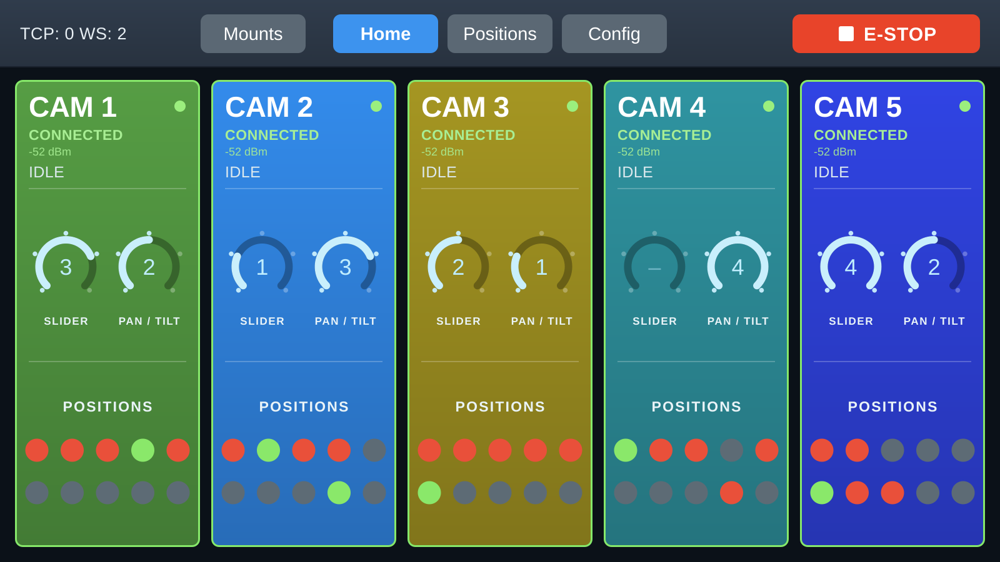
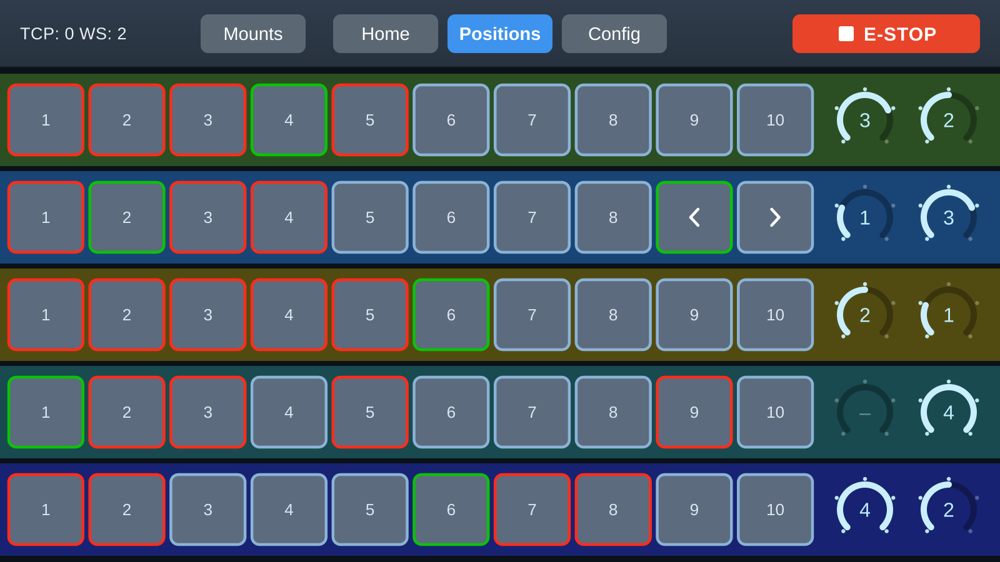
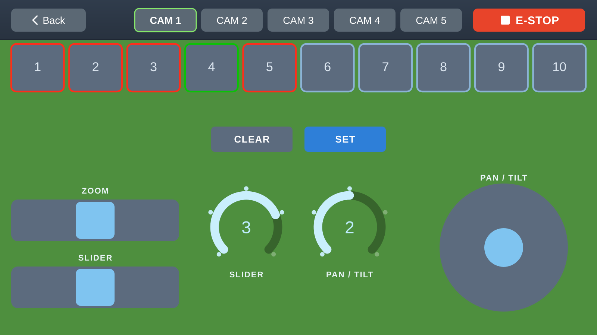
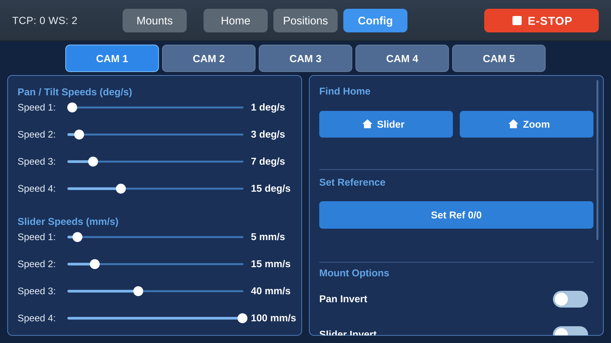
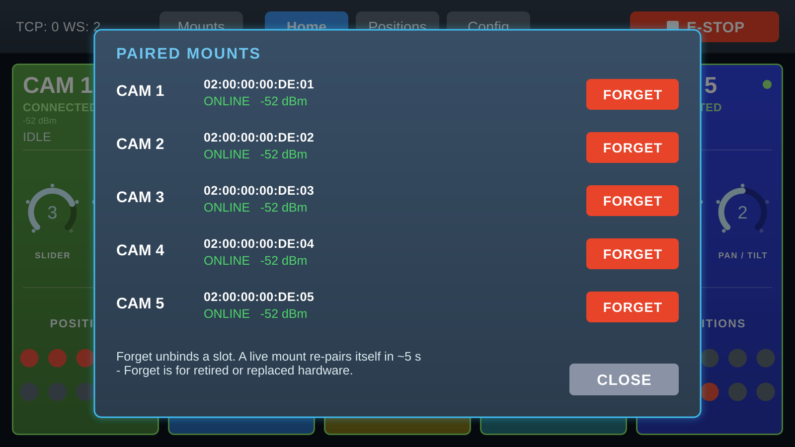

Hub touchscreen
The 7″ console — enough to run the whole rig with no computer at all.
An optional 7″ touchscreen console wires directly to the hub. It's a standalone control surface: a hub, its display, five mounts and a Stream Deck make a complete rig with no PC in sight. It runs on an LVGL interface and connects to the hub over a wired UART link automatically on power-up.

What's on it
- Five live camera tiles — each shows its camera's state, link and activity, updating as any surface drives the rig.
- Positions — store and recall the ten slots per camera (Storing & recalling shots).
- Speed dials — set the active pan/tilt and slider presets.
- Look-at — select subjects and run ◀ / ▶ moves (Look-at tracking).
- Per-camera config — speeds, homing, inversion and stall tuning, right on the touchscreen (Configuration).
- Pairing UI — view the hub's mount table, resolve same-number conflicts, and forget a mount. The console does this, and so do the web app and PC app — all acting on the hub's one table (Pairing & identity).
The screens
The top bar switches between Home, Positions and Config; tap any camera tile to drop into its detailed control screen. E-STOP is always top-right.


It follows the camera's live link, so it appears when a camera connects and goes away when one drops, without leaving the screen.

The Slider Angle row sets how far the rail climbs, for a
mount rigged on a rake or a truss. − and + step by
half a degree and 0 levels it — the same setting as the number box
in the PC and web apps, and it matters for look-at tracking. See
Configuration.
+ are one message, not
six. Switching camera saves the one you are leaving first.
Until a mount has reported its angle, the console will not send one, so changing an invert flag on a camera you have only just opened cannot level a rail by accident.

Working alongside other surfaces
The console is a peer, not a master. It shows the same state as the PC app, phones and Stream Decks, and any of them can take over at any moment — because positions and calibration live on the mounts, not on whichever surface you happen to be touching (How it fits together).
Next: driving the rig from buttons and cues — Companion / QLab.